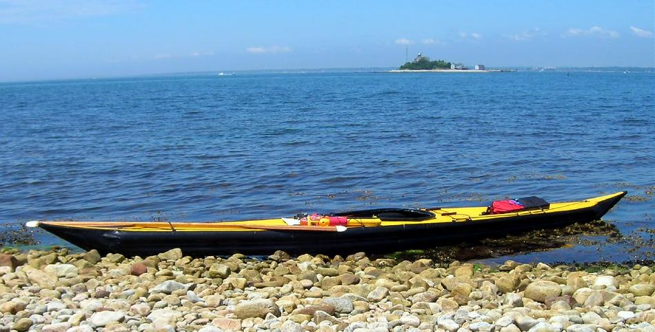

| Sonnet 16 by David Long (US) | Menu Previous Page Next Page |
|

David, from Connecticut, has completed a Sonnet 16 Inflatable / Folder hybrid. He previously constructed both a Sea Ranger LC and Sea Tour 17-R. The Sonnet 16 dimensions are 16' X 21" X 20lbs. with a 10 minute assembly. Use the {Back} key to return. Below are some of his comments regarding the Sonnet 16.
..... "Overall, I like the Sonnet a lot. For general paddling in the lakes, rivers, and marshes
around here, I would take the Sonnet before both the Sea Tour and the Sea Ranger. The initial stability is
better than both. It's a very relaxing boat to paddle. The boat tracks well and turns easily.....The inflated sponsons and side stringers give the hull more stiffness than I had anticipated......The Sonnet is a real recreational kayak and I mean that in the best possible way. I can have a boat in the car for
the times when I happen upon a place that looks interesting to paddle..... The bow of the sonnet rises up more over the waves whereas the Sea Ranger seems to punch through more." Ocean Paddling...."The Sonnet is great in the swells and tidal currents - tracks well ...... it has far exceeded any expectations that I had when I started." |
|